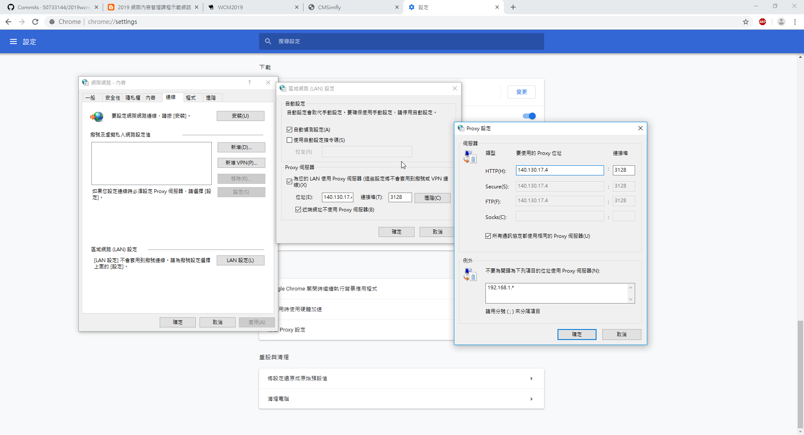
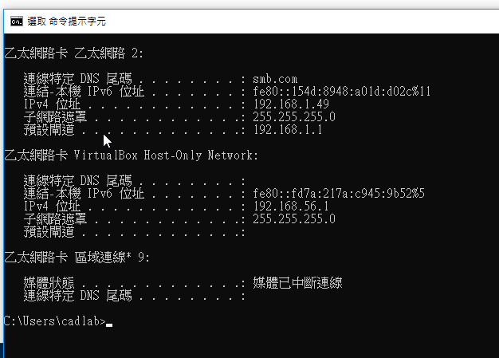
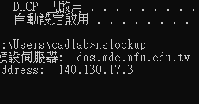
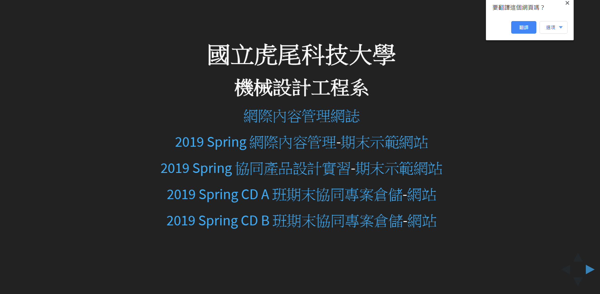
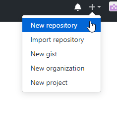
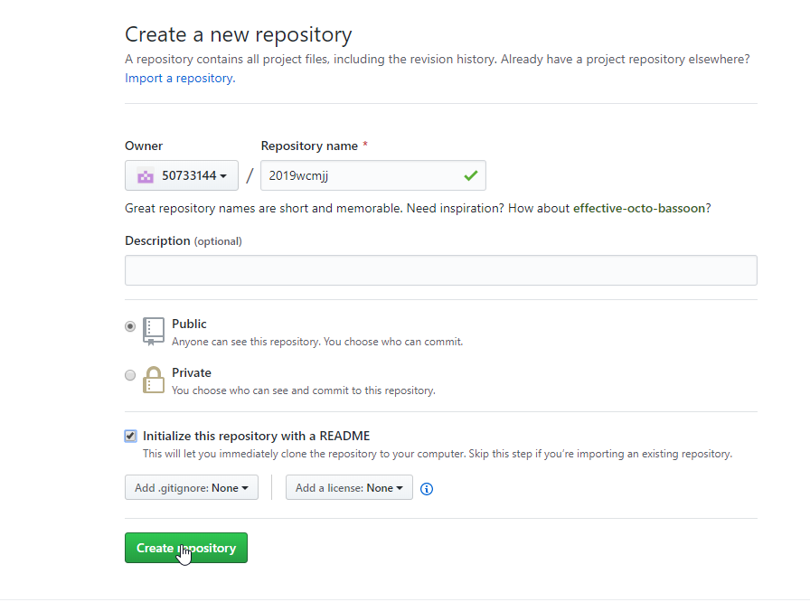

windows network setting

指令ipconfig all

指令nslookup

chrome proxy
firefox proxy
mde.tw

github.com


portable programming system
protablegit - remove helper = manager
login github add repository - README.md
git clone self-repo and CMSimfly
y:\home\.gitcongit
git config --global user.name"50733144"
git config --global user.email"50733144@gm.nfu.edu.tw"
git config --global http.proxy https://140.130.17.3:3128
git add .
git push
Github Pages - setting, url
local python wsgi.py